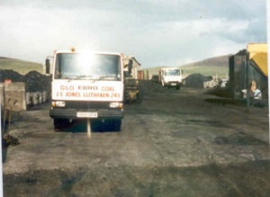

Coalyard
Robert Thomas, Bryncelyn, ran a busnes transporting animals and a garage here. The coalyard came into the family after the marriage of Robert Thomas Jones and Rena, a coal merchant’s daughter from Mynydd Nefyn. This is one of the few businesses in Llithfaen still run by the founding family. Dylan Jones, their son, expanded the business to sell oil.
Census Facts:
Bryncelyn Coalyard